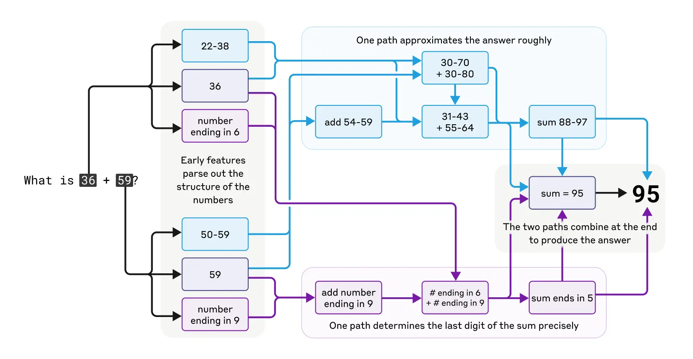

쯇uedes generarme una casa?
Los LLMs (Large Language Models) son algoritmos construidos para procesar y generar lenguaje ¨natural¨ mediante billones de operaciones internas. ChatGPT es una de las interfaces más conocidas que aprovecha versiones refinadas de estos modelos para responder consultas y, cada vez más, para integrarse con otras herramientas como buscadores web o generadores de imágenes.
El funcionamiento de estos sistemas se basa en un mecanismo simple: la predicción secuencial de palabras, parecido al del autocorrector de nuestros teléfonos móviles. Sin embargo, de esta aparente simplicidad emerge una capacidad sorprendente para elaborar textos con estructuras complejas, rimar e incluso realizar operaciones matemáticas básicas como sumar 36 y 59 para obtener 95, evidenciando un comportamiento que trasciende la memorización de datos .
Las bases de datos de entrenamiento utilizadas ocupan enormes servidores con miles de ordenadores interconectados pero, paradójicamente, los modelos finales son relativamente pequeños para que entren en la memoria de ordenadores convencionales. Esta reducción de tamaño contradice la idea popular de que el algoritmo memorice la información y todas las posibles relaciones.
El laboratorio de inteligencia artificial de Anthropic, empresa estadounidense, lidera la investigación en explicabilidad e interpretación de algoritmos de aprendizaje automático que permitan descifrar la "caja negra". Su reciente estudio 1 revela los procesos internos que emplea un LLM para sumar dos números: unas neuronas aproximan el resultado global mientras otras predicen el último dígito. El algoritmo desarrolla métodos propios de cálculo, diferentes a los procesos exactos de una calculadora, similar a como los humanos desarrollamos estrategias cognitivas particulares para procesar operaciones matemáticas.
Mañana, Autocad y Grasshopper se actualizarán. Sin previo aviso, un chat lateral conectado directamente a los servidores de OpenAI te saludará y te ofrecerá el diseño de una casa. En cuestión de un minuto tu pantalla se llenará de casas a un ritmo difícil de seguir hasta para un ojo entrenado. "Estas distribuciones favorecen la unión familiar mientras que estas priorizan la eficiencia energética", te asegurará el chatbot mientras destaca una a una.
La definición sobre qué es lo doméstico la escribirán algoritmos cerrados llenos de patrones del pasado, congelados en el tiempo, tratando de dar una sensación de revolución constante. Empresas de inteligencia artificial entrarán en contacto con empresas como Autodesk o McNeel para automatizar las tareas y pasarán a contactar a estudios multinacionales de arquitectura para optimizar y automatizar los procesos creativos de la disciplina.
Detrás de la etiqueta "user-friendly" de estos productos, supuestamente diseñados para ayudar y automatizar, realmente hay un interés por ocultar los procesos, hacerlos más inaccesibles para los usuarios y que las empresas mantengan el control según sus intereses. Los intentos por que estos algoritmos se expliquen con lenguaje natural parece que también son en vano. El estudio de Anthropic demuestra que muchas veces mienten en su explicación por que no comprenden su propio funcionamiento, similar a un humano intentando explicar su cerebro. Cuando la operación matemática se complica, el chatbot escoge una vía diferente, lo que el filósofo Harry Frankfurt llamaría "bullshitting": dar una respuesta, cualquier respuesta, sin importar si es verdadera o falsa.2
1On the Biology of a Large Language Model, 2025. Link al artículo
2 On Bullshit The Importance of What We Care About (Cambridge: Cambridge University Press, 1988) Harry G. Frankfurt Link al artículo
3El Arte ASCII (pronunciado arte áski) es un término colectivo utilizado para describir imágenes que se han producido utilizando únicamente el conjunto de caracteres ASCII. (Wikipedia) ASCII Houses
4Los gráficos vectoriales escalables o gráficos vectoriales redimensionables (del inglés: Scalable Vector Graphics (SVG) es un formato de gráficos vectoriales bidimensionales. (Wikipedia)